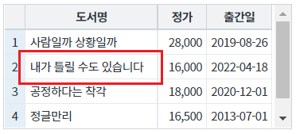
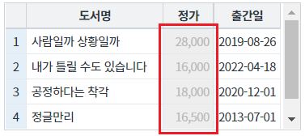

[GridView] 비활성화 여부 지정하기 - 셀, 컬럼, 로우
1개요
GridView의 셀, 컬럼, 로우의 비활성화 여부를 지정하는 예제입니다. 이 기능은 아래의 GridView의 함수를 호출하여 사용할 수 있습니다. - setCellDisabled : 셀 단위 비활성화 - setColumnDisabled : 컬럼 단위 비활성화 - setRowDisabled : 로우 단위 비활성화
2구현된 기능
셀의 비활성화 여부 지정하기
컬럼의 비활성화 여부 지정하기
로우의 비활성화 여부 지정하기
3예제 테스트 방법
3.1셀의 비활성화 여부 지정하기
- STEP1. 초기 상태 확인하기
영역 [GridView 셀의 비활성화 여부 지정하기]의 GridView를 확인합니다.
GridView의 모든 셀이 활성화 되어있습니다. (모든 셀 수정 가능)
[브라우저(Chrome) 실행 예시]

- STEP2. 셀의 비활성화를 적용합니다.
버튼 컬럼 '도서명'의 2번째 행의 셀을 비활성화 적용하기를 클릭합니다.
- STEP3. 실행 결과를 확인합니다.
컬럼 '도서명'의 2번째 행의 셀이 비활성화됩니다.
셀의 배경색과 글자색이 변경됩니다.
(또한 셀을 더블 클릭하면 수정 모드로 진입하지 않습니다.)
[브라우저(Chrome) 실행 예시]

- STEP4. 셀의 비활성화를 해제합니다.
버튼 컬럼 '도서명'의 2번째 행의 셀을 비활성화 해제하기를 클릭합니다.
- STEP5. 실행 결과를 확인합니다.
컬럼 '도서명'의 2번째 행의 셀이 활성화됩니다.
셀의 배경색과 글자색이 초기 설정값으로 변경됩니다.
(또한 셀을 더블 클릭하면 수정 모드로 진입합니다.)
[브라우저(Chrome) 실행 예시]

3.2컬럼의 비활성화 여부 지정하기
- STEP1. 초기 상태 확인하기
영역 [GridView 컬럼의 비활성화 여부 지정하기]의 GridView를 확인합니다.
GridView의 모든 셀이 활성화 되어있습니다. (모든 셀 수정 가능)
[브라우저(Chrome) 실행 예시]
- STEP2. 컬럼의 비활성화를 적용합니다.
버튼 컬럼 '정가'에 비활성화 적용하기를 클릭합니다.
- STEP3. 실행 결과를 확인합니다.
컬럼 '정가'가 비활성화됩니다.
셀의 배경색과 글자색이 변경됩니다.
(또한 셀을 더블 클릭하면 수정 모드로 진입하지 않습니다.)
[브라우저(Chrome) 실행 예시]

- STEP4. 컬럼의 비활성화를 해제합니다.
버튼 컬럼 '정가'에 비활성화 해제하기를 클릭합니다.
- STEP5. 실행 결과를 확인합니다.
컬럼 '정가'가 활성화됩니다.
셀의 배경색과 글자색이 초기 설정값으로 변경됩니다.
(또한 셀을 더블 클릭하면 수정 모드로 진입합니다.)
[브라우저(Chrome) 실행 예시]

3.3로우의 비활성화 여부 지정하기
- STEP1. 초기 상태 확인하기
영역 [GridView 로우의 비활성화 여부 지정하기]의 GridView를 확인합니다.
GridView의 모든 셀이 활성화 되어있습니다. (모든 셀 수정 가능)
[브라우저(Chrome) 실행 예시]
- STEP2. 로우의 비활성화를 적용합니다.
버튼 1번째 행에 비활성화 적용하기를 클릭합니다.
- STEP3. 실행 결과를 확인합니다.
1번째 행이 비활성화됩니다.
셀의 배경색과 글자색이 변경됩니다.
(또한 셀을 더블 클릭하면 수정 모드로 진입하지 않습니다.)
[브라우저(Chrome) 실행 예시]

- STEP4. 로우의 비활성화를 해제합니다.
버튼 1번째 행에 비활성화 해제하기를 클릭합니다.
- STEP5. 실행 결과를 확인합니다.
1번째 행이 활성화됩니다.
셀의 배경색과 글자색이 초기 설정값으로 변경됩니다.
(또한 셀을 더블 클릭하면 수정 모드로 진입합니다.)
[브라우저(Chrome) 실행 예시]

4구현 예시
4.1셀의 비활성화 여부 지정하기
- 원하는 시점에 스크립트를 작성합니다.
GridView의 함수 setCellDisabled을 사용합니다.
[소스 코드 예시]
//예제 파일의 스크립트 "scwin.btn_ex1_onclick" 또는 "scwin.btn_ex2_onclick"를 참고하세요. //GridView 'grd_exam1'의 컬럼 '도서명'의 2번째 행의 셀을 비활성화 적용하기 grd_exam1.setCellDisabled(1, "book_name", true); //GridView 'grd_exam1'의 컬럼 '도서명'의 2번째 행의 셀을 비활성화 해제하기 grd_exam1.setCellDisabled(1, "book_name", false)
4.2컬럼의 비활성화 여부 지정하기
- 원하는 시점에 스크립트를 작성합니다.
GridView의 함수 setColumnDisabled을 사용합니다.
[소스 코드 예시]
//예제 파일의 스크립트 "scwin.btn_ex3_onclick" 또는 "scwin.btn_ex4_onclick"를 참고하세요. //GridView 'grd_exam2'의 컬럼 '정가'에 비활성화 적용하기 grd_exam2.setColumnDisabled("price", true); //GridView 'grd_exam2'의 컬럼 '정가'에 비활성화 해제하기 grd_exam2.setColumnDisabled("price", false)
4.3로우의 비활성화 여부 지정하기
- 원하는 시점에 스크립트를 작성합니다.
GridView의 함수 setRowDisabled을 사용합니다.
[소스 코드 예시]
//예제 파일의 스크립트 "scwin.btn_ex5_onclick" 또는 "scwin.btn_ex6_onclick"를 참고하세요. //GridView 'grd_exam3'의 1번째 행에 비활성화 적용하기 grd_exam3.setRowDisabled(0, true); //GridView 'grd_exam3'의 1번째 행에 비활성화 해제하기 grd_exam3.setRowDisabled(0, false);
5유의 사항
이 예제에서는 비활성화 여부 지정에 대한 구현 예시만 작성되어 있습니다.
비활성화 된 셀의 배경색과 글자색을 지정하는 예제는 [GridView] 셀이 비활성화되었을 때의 셀 배경색, 글자색 지정하기에 작성되어 있습니다.
6주요 API
setCellDisabled( rowIndex , colIndex , disabled )
setColumnDisabled( colIndex , disabled )
setRowDisabled( rowIndex , disableFlag )
disabledBackgroundColor
disabledFontColor
7참고 문서
[웹스퀘어5 SP5 개발 가이드] GridView
링크 : https://docs1.inswave.com/sp5_user_guide/bc10c1b82c9a2a0b#e1c4658baf7e726f
[웹스퀘어5 SP5 개발 가이드] GridView 셀
링크 : https://docs1.inswave.com/sp5_user_guide/86bdcf48029b958b#968539217b7575c2
[웹스퀘어5 SP5 개발 가이드] GridView 특정 셀 비활성화
링크 : https://docs1.inswave.com/sp5_user_guide/86bdcf48029b958b#71a2e8ca649f2aa1
8참고 동영상
GridView 특정 셀 비활성화